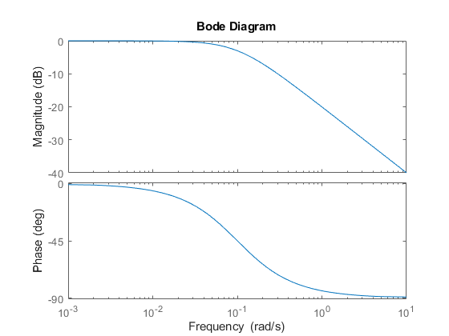
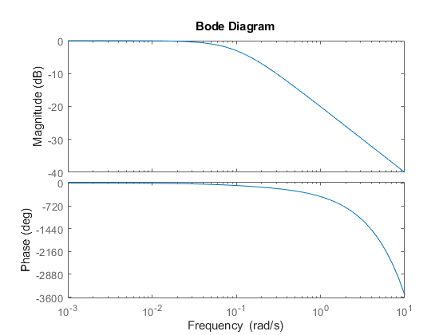
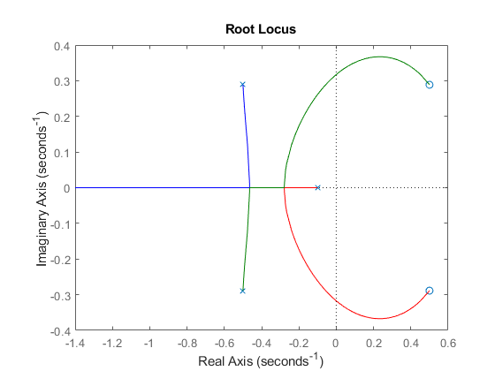
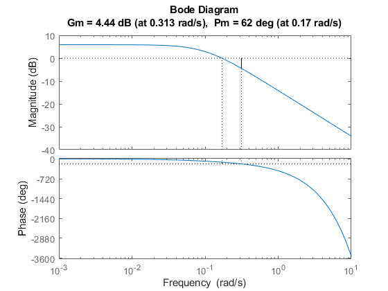
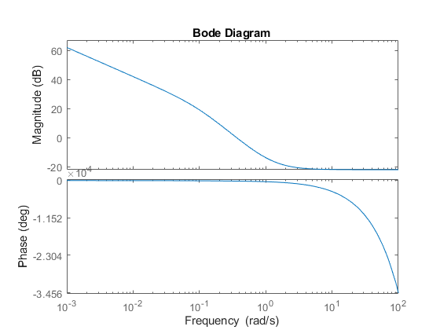
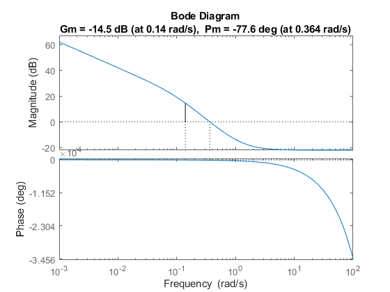

Contents
Homework 3
Muhammad Bintang Gemilang A16609839
clc;
clear;
clf;
close all;
Problem 1
G_delay = tf([0.1], [1 0.1], 'InputDelay', 6); % G plant with delay G = tf([0.1], [1 0.1]); % G plant without delay % without delay figure(1) bodeplot(G); % with delay figure(2) bodeplot(G_delay); 
Problem 2
D_prop = tf([0.6], [1]); % exclude ku G_pade = pade(G_delay,2); % pade approx. for time delay % Find K = Ku figure(3) rlocus(G_pade); [Gm_init, Pm_init, Wcg_init, Wcp_init] = margin(G_delay); Ku = Gm_init; % Apply Kp = alpha*Ku as D(s) alpha = 0.6; L_prop = alpha * Ku * G_delay; figure(4) margin(L_prop); [Gm_fin, Pm_fin, Wcg_fin, Wcp_fin] = margin(L_prop); 
Problem 4a
D_pid = 0.78697*tf([1 2.54 1.61], [1 0]); L_pid = G_delay * D_pid; figure(5) bodeplot(L_pid); figure(6) margin(L_pid); [Gm_fin2, Pm_fin2, Wcg_fin2, Wcp_fin2] = margin(L_pid);
Warning: The closed-loop system is unstable. 
Problem 6a
G_c2d= c2d(G * tf([1],[1 0]), 2, 'zoh'); G_disc1 = tf([1 -1],[1 0 0 0 0],2); G_disc_fin = G_c2d * G_disc1; % simplified G(z) G_disc_fin2 = tf([0.1873 0.1752],[1 -0.8187 0 0 0 0], 2);